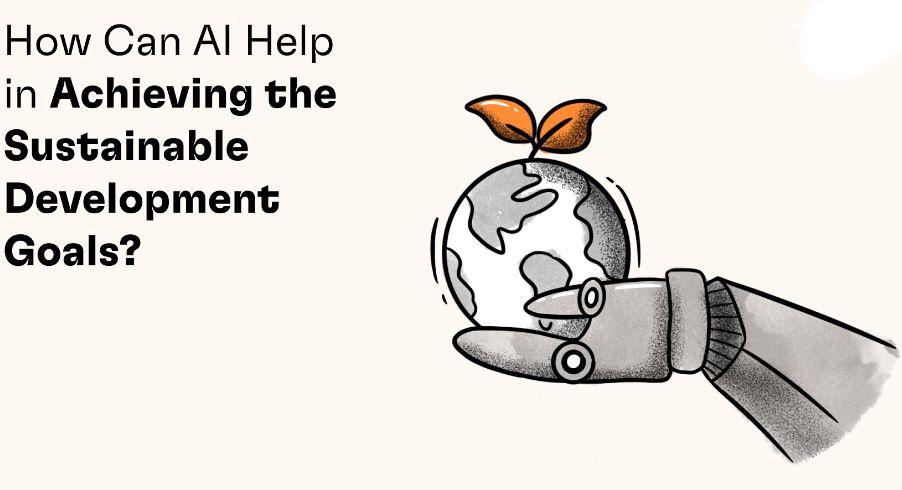

Project By Aditri, Aditya, Arsheya & Rushil
We have realized the great power of Artificial Intelligence (AI throughout its widespread applications to fight against the COVID-19 pandemics. Now with the following success, scientists and practitioners are also exploring ways in which AI can facilitate the efforts to achieve Sustainable Development Goals. Recently, it is also a core topic for the UN Secretary-General's Digital Cooperation Roadmap. The AI for Good Foundation, established in 2015, aims to advance the achievement of SDGs by coordinating AI research communities, policy makers and the general public, and has operations in the United States, the United Kingdom etc.